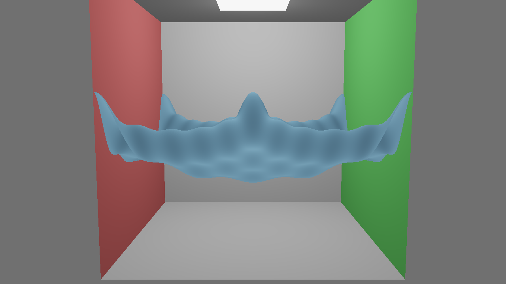

We see a really amazing visual phenomenon every day and often don't even bat an eyelash. Light streaming through water is a complex and beautiful interaction which poses a significant challenge to mimic using computer graphics techniques. In this project, we designed and created an application from scratch using OpenGL, created a height field simulation of water, and implemented photon mapping for global illumination and caustic highlights. Height field simulation is a method which represents water as a 2d grid of heights, and updates heights based on neighboring heights and the wave equation. Photon mapping is a global illumination method which works in two passes - firing photons from light sources into the scene, and firing rays from pixels into the scene to query the nearby photons. The interplay between these methods makes it a very cool problem with a lot of depth and intrigue, not to mention the cool procedural renders that can come from it!
Architecture Choices and Approach
While in our planning phase, we chose to break down the whole project into four main pieces.
The underlying graphics application
The static geometry of the scene
The dynamic geometry of the scene
The lighting of the scene
Graphics application
First, we put together the graphics application itself, which we did from scratch using a few libraries - OpenGL, GLFW, GLM, GLAD, and stb_image_write. Using these, we were able to render scene geometry using the Blinn-Phong lighting model for debugging at first. We rigged it up to run for multiple frames with great configurability of quality and to output each frame as well as metadata about the run and an mp4 created by splicing the frames together. With this solid framework under our belt, we were in good shape to work on the static geometry of the cornell box and water mesh because of all the debugging conveniences we'd afforded ourselves.
Static geometry
Next, we built the static scene geometry - a simple unit cube with a red left side, green right side acted as our cornell box, and set up the height field, which would dynamically create a triangle mesh from the height data at each node of the size-configurable grid. We implemented a few types of initial geometry for the height field, generated procedurally. We could either perturb the heights by adding cosine waves of different frequencies, or by adding "gaussian drops" which serve to mimic the ripples that might be created when dropping some small object into the water. With these initial configurations in hand, we were ready to work on the physics of the height field.

Cosine-perturbed height field in Cornell box with Blinn-Phong lighting
Height field physics
To get the height field moving, we defined the wave equation and updated the mesh according to it each frame. In order to maintain numerical stability, we had to dynamically substep the simulation depending on the complexity of the updates. We also had to apply Neumann boundary conditions to make sure water wasn't allowed to leak out of the edges of the container. Having implemented the physical simulation for the height field, and dynamic updating of the mesh from its height values, we were ready to light it using photon mapping.
Wave equation updates with a few cosine wave harmonics
Obviously non-physical wave equation solution with many harmonics
Photon mapping
Finally, the longest and hardest part of the project - implementing photon mapping. To get clean caustics with this lighting method, we split the photon maps in two - the caustic map and the global illumination map. For the caustic map, we sample a location from the light and a location from the water, then compute the resultant locations of the reflected or refracted photons based on the incident angle and the normal vector of the water at the point of intersection. To find the point of intersection efficiently, we store the updated water mesh each frame, and test for intersection in 2d boxes once the ray passes between the max and min heights. Doing this repeatedly, we collect a map where photons tend to land to query for the caustics of our ray-traced lighting pass. For the global illumination map, we don't only fire photons at the water, but generally around the scene, and we use Russian Roulette termination to allow them to disperse illumination around the scene through multiple bounces and estimate the rendering equation in an unbiased way. For the second pass, we fire rays from the camera into the scene and query the photon maps in a small radius around the point of intersection. Since the water has dynamic geometry, the lighting changes every frame and caustics are concentrated in certain places, giving the photon mapped render a life of its own!
Debug visuals when beginning to implement photon maps
Major problems
Without going into too much depth, there were many debugging or architectural hangups which required a lot of time and diligence to resolve. These include but are not limited to:
Overly noisy height field geometry
Height field physics losing energy, leaking from container, instability
Casting photons and rays
Storing and querying photons
Rendering large photon counts in reasonable times
Getting the resultant image to look reasonable
Lessons learned
We learned how to develop iteratively, and how important it is to keep debugging and refactoring in mind. To complete a large project like this, it took many hours of rewiring the pipeline to fit together, tick and tying disparate parts of the project, and pinpointing which piece was causing problems. The only reason We was able to finish was because of a general awareness of debugging and organization which saved us enough time and tears to get results we're happy with in this short time.
Results
Final renders!
Fun fact:
The final render took 940 seconds!!! This is because it's full resolution (about 3.7M rays cast, 1280x720 and 2x2 AA) and 300000 photons for each of caustics and global per frame (caustics doubles photons for reflection and refraction, global marches photons with Russian roulette)... That's a lot of compute! My computer was disagreeing vocally!
AI Disclosure
I worked very heavily with AI on this project, using Claude and Gemini constantly. I could not have done this ambitious of a project without the AI help, nor could I have done it without the knowledge I gained from this class and from researching for this project, so the AI were tools, not crutches.